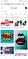

The power of Professional Currency
You may know that one of the factors that make people share a thing, an idea or a product online or offline is social currency. We share things that are highly likely to increase our status, to make others feel and acknowledge that we are smart, styled, skilled, hired… we are like that. In the case of a product that targets professionals, you better have to call this professional currency. For example, if you have a job board plat ft rm that you are willing to market you should embed into it a scoring system that allows candidates to show their value. By doing this you will make those who score high share their scoreboard online or tell it to their friends or during their interviews. This is a professional currency, like diplomas professional currency will always be shared if its value is high because we always want to show what we did in our past experience and we do it like that
Because of people like us do things like that and because when it come to professional relationship people always judge us by seeing our past experience not what we can ship in the near and far future.
Every marketers or software engineers involved in a product or service that target a professional audience of persons like designers, developers, marketers, creators, craftmen and craftwomen ….. should leverage the power of professional currency in order to get more traction with word of mouth and online virality.
